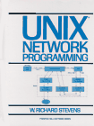

UNIX Network Programming
, Prentice Hall, 1990, ISBN 0-13-949876-1.
Additional Information:
Table of Contents (HTML).
Current errata
.
Foreign language translations
.
Source code
for all examples in the book (190K compressed tar file).
Source code
for for the missing
netdefs.h
file.
Source code
for a SunOS version of the
systype.h
file.
Order it now
(In
association
with Amazon.com Books).
Back to W. Richard Stevens' Home Page
 Back to W. Richard Stevens' Home Page
Back to W. Richard Stevens' Home Page